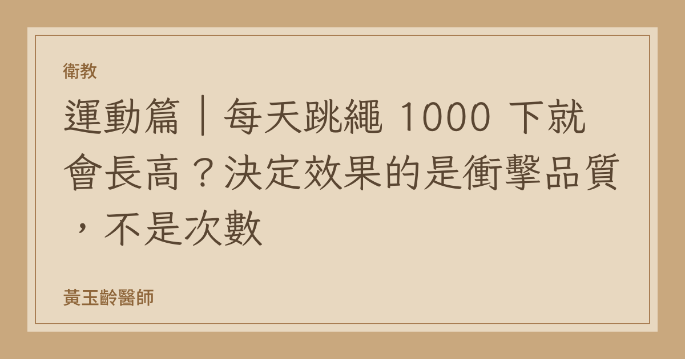

衛教
運動篇｜每天跳繩 1000 下就會長高？決定效果的是衝擊品質，不是次數
「我叫他每天在客廳跳 1000 下，結果他一直喊腳底跟膝蓋痠痛。」
門診裡遇到這種情況，我第一個問的不是「跳幾下」，是「怎麼跳」。
因為跳繩對骨骼的刺激效果，取決於單次落地的衝擊品質，而不是總次數。次數堆得太高，還沒等到骨骼有反應，肌腱和足底筋膜就先罷工了。
一、骨骼是怎麼「聽懂」跳躍的
骨骼會依據所承受的機械負荷調整結構，這是 Wolff 定律的現代版本，稱為機械轉導（mechanotransduction）。骨細胞（osteocyte）感應到骨基質的形變，啟動成骨反應。
但骨細胞對負荷是挑剔的，它們反應的條件包括：
峰值力量要夠大：文獻指出具骨源性（osteogenic）效果的活動，地面反作用力（GRF）需超過體重的 3.5 倍（單腳）
上升速率要夠快：峰值力量要在 0.1 秒內達到
要有休息間隔：骨細胞會對持續、重複的相同刺激產生鈍化（desensitization）
最後一點是關鍵，也是「1000 下」策略最大的問題所在：連續、單調、低品質的重複跳躍，骨細胞在前幾十下之後就不太理你了，但關節與軟組織的累積負荷卻是線性上升的。
二、實證資料怎麼說
Fuchs 等人（J Bone Miner Res, 2001）——這是這個領域最常被引用的隨機對照試驗。89 名 5.9–9.8 歲的青春期前兒童隨機分為跳躍組與對照組，介入 7 個月，每週 3 次、每次從 61 公分箱子上跳下 100 下。
結果（校正初始年齡、初始骨值、身高與體重變化後）：
股骨頸骨礦物質含量（BMC）比對照組多增加 4.5%
腰椎 BMC 多增加 3.1%
腰椎骨密度（BMD）多增加 2.0%
股骨頸骨面積多增加 2.9%
研究團隊實測跳躍時的地面反作用力約為體重的 8 倍，並結論這是安全、有效且容易實施的方法。
注意：每次 100 下，每週 3 次，總共 300 下／週。 不是 1000 下／天。
Specker & Binkley（2003） 的隨機試驗則測試更低的劑量：每天 25 下、每週 5 天、共 12 週。結果顯示骨骼反應具有部位特異性——受力的部位有反應，其他部位沒有。
2025 年 BMC Sports Science, Medicine and Rehabilitation 發表的前瞻對照試驗，針對 47 名 8–11 歲的青春期前矮小兒童，介入組進行 24 週漸進式跳躍訓練（每週 3 次、每次 50 分鐘）。結果股骨頸 BMD 顯著上升，腰椎則無顯著變化，再次驗證了負重部位的特異性反應。
三、姿勢錯了，做的是另一件事
「叩叩叩」的重踩落地，和輕盈的前腳掌落地，力學上是兩回事。
全腳掌重踩：
衝擊力沿脛骨、膝關節、髖關節向上傳遞，缺乏緩衝
落地時間長，峰值上升速率反而不理想
累積負荷集中在足底筋膜、脛骨與髕骨，是兒童跳繩最常見的疼痛來源
前腳掌著地、膝蓋微彎：
小腿三頭肌與阿基里斯腱進行離心收縮吸收能量
力量傳遞路徑符合骨骼的正常受力方向
落地聲音明顯較小——聲音是很好的自我檢查指標
孩子喊腳底板痛、膝蓋痛，多半不是「還沒適應」，是姿勢與劑量的問題。持續下去可能演變成脛骨內側壓力症候群（shin splints）或足底筋膜炎。
四、實務執行建議
次數： 每次 50–100 下，分 2–3 組，中間休息。每週 3–5 天。這已經達到文獻中的有效劑量，再往上加邊際效益遞減、受傷風險遞增。
姿勢： 前腳掌著地、膝蓋微彎吸震、身體保持直立、繩子靠手腕轉不靠手臂甩。落地要「輕」。
鞋子： 一定要穿有避震的運動鞋。赤腳或穿拖鞋在硬地板上跳，是門診常見的疼痛原因。
場地： 避免磁磚、水泥等硬地面。木地板、PU 跑道、瑜珈墊都比較理想。
最重要的一點：跳繩不是唯一解。
任何孩子願意持續做的中高強度運動，都能提供骨骼負荷與運動後的生長激素反應：籃球、跳箱、跑跳類遊戲、體操、直排輪、羽球。運動對長高的幫助有很大一部分來自「規律、持續、開心地動」，而不是某個特定動作。
一個討厭跳繩但每天打半小時籃球的孩子，效果會比一個被逼著跳 1000 下、三天就放棄的孩子好得多。
五、別忘了記錄生長曲線
運動要做，但更重要的是知道有沒有效。
每 3 個月量一次身高，同一時間、同一台身高計、脫鞋
畫在兒童生長曲線圖上，看的是趨勢，不是單點
一年身高增加不到 4 公分，是需要就醫評估的警訊
身高低於同齡同性別第 3 百分位，同樣需要評估
生長曲線向下跨越兩條主要百分位線，也應該就醫
這三個指標，任何一個出現都值得找小兒內分泌科醫師談談。運動、飲食、睡眠都做對了但曲線還是走不上去，那可能就不是生活習慣的問題。
參考文獻
Fuchs RK, Bauer JJ, Snow CM. Jumping improves hip and lumbar spine bone mass in prepubescent children: a randomized controlled trial. J Bone Miner Res. 2001;16(1):148-156.
Specker B, Binkley T. Bone response to jumping is site-specific in children: a randomized trial. Bone. 2003.
Effects of 24-week jumping exercise on bone mineral density and linear growth in children with short stature: a prospective controlled trial. BMC Sports Sci Med Rehabil. 2025.
Turner CH, Robling AG. Designing exercise regimens to increase bone strength. Exerc Sport Sci Rev. 2003.
本文為衛教資訊，不能取代個別診療。若孩子在運動後持續疼痛，請就醫評估。